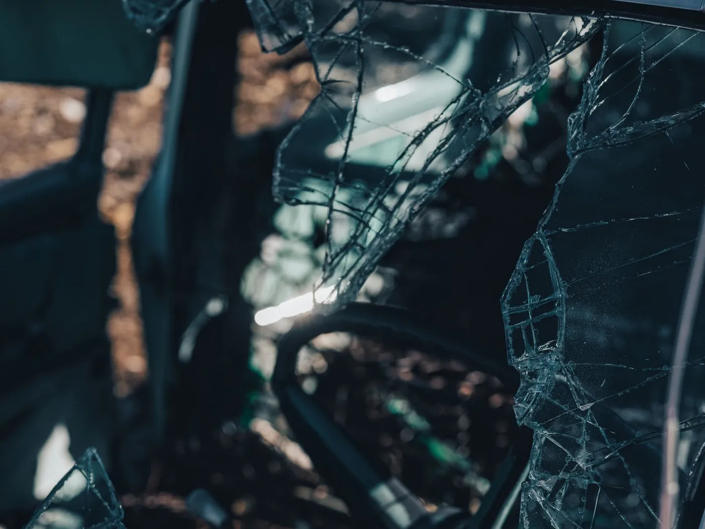

Car window replacement in Paterson for broken door glass, back glass and small quarter windows. We vacuum out the broken glass, install the new window and test it before we leave, right where the car is parked.
(973) 938-8879
For a door window, the tech removes the door panel, clears the broken pieces from inside the door and vacuums glass out of the seats, carpet and window channel. The new glass bolts to the regulator and gets run up and down to test it.
Back glass and fixed quarter glass are set in urethane, much like a windshield. Back glass with defroster lines gets its connectors reattached and checked.
Side and back windows are usually tempered glass, which breaks into small cube-shaped pieces when it fails. Windshields are laminated, with a plastic layer that holds cracked glass together.
That’s why a broken side window can’t be repaired, only replaced. It also means glass ends up everywhere, deep inside the door included, so cleanup is part of the job. “Can you get the glass out of my seats?” is the first thing most people ask, and yes, we do. Some newer cars use laminated side glass for quiet and security, which costs more.
Which window broke matters most. A front door window, a small quarter glass and a heated back glass are all different parts. Tint, laminated glass and power sliders on trucks add cost.
Break-ins usually fall under comprehensive insurance. Call (973) 938-8879 with your year, make, model and which window broke for a free quote on car window replacement in Paterson.
| Door glass | Back glass |
|---|---|
| Mounted to the window regulator inside the door. | Bonded in place with urethane. |
| Ready to use right after testing. | Needs cure time before a car wash or hard driving. |
| Cleaning glass out of the door is a big part of the job. | Defroster lines and wiring need reconnecting. |
Windshield cracked too? See windshield replacement in Paterson.
Same-day car window replacement in Paterson is often possible when the glass is in stock nearby. Less common windows, laminated side glass and some back glass may take a day or two to arrive.
Yes. Every car window replacement in Paterson includes vacuuming broken glass out of the seats, floor and door. Glass hides in seat tracks, so we take our time on it.
A window broken in a break-in is usually covered under comprehensive coverage on a New Jersey auto policy, minus your deductible. Items taken from the car generally fall under homeowners or renters insurance instead.
Call now for a free quote. We come to your home or job in Paterson.
Call (973) 938-8879 for a Free Quote